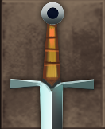
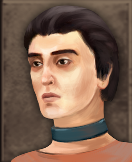
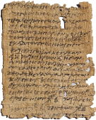
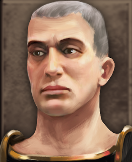
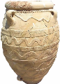
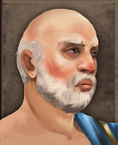

RTR: Imperium Surrectum
RTR: Imperium SurrectumRetinue — D
← all retinue · all traits · wiki index
33 retinue members whose name begins with D. A · B · C · D · E · F · G · H · I · J · K · L · M · N · O · P · Q · R · S · T · U · V · W · X · Y · Z
Dacian Warlord

never for 14 of the cultures.Effects: +1 Command, +1 Troop Morale, +1 Infantry Command
This man is seen as a mighty war leader by his people.
Cultures that never receive it (14)
Scythian · Phoenician · Libyan · Caucasian · Anatolian · Iranian · Arab · Indian · Roman · Greek · Western Hellenistic · Eastern Hellenistic · Egyptian · Ethiopian
How it is gained — 1 trigger, after a battle
| When | Chance | Conditions | |||||||||
|---|---|---|---|---|---|---|---|---|---|---|---|
| after a battle | 100% | IsGeneral and WonBattle and BattleSuccess >= clear and I_ConflictType Normal and BattleOdds < 1.5 and PercentageEnemyKilled >= 45 and not IsFactionLeader and not IsFactionHeir and FactionType getae and not FactionwideAnc… |
---
Damophon
unique — one in the world at a time · never alongside Sculptor, Specialized Artisan.
Effects: +1 Influence, +5 Construction
An ancient Greek sculptor from Messene, who executed many statues for the people of Messene, Megalopolis, Aegium and other cities of Peloponnesus. His statues were acroliths. Damophon also restored Phidias' statue of the Greek god Zeus, which had been damaged in an earthquake.
Acquisition is tied to the trait: Lover of Beauty.
How it is gained — 1 trigger, when a building completes in the governed city
| When | Chance | Conditions | |||||||||
|---|---|---|---|---|---|---|---|---|---|---|---|
| when a building completes in the governed city | 40% | not CultureType barbarian and not CultureType celtiberian and not CultureType brittonic and not CultureType germanic and not CultureType dacian and not CultureType thracian and not CultureType scythian and IsGeneral and … |
---
Dancer
 never alongside Dancer.
never alongside Dancer.
Effects: +2 Subterfuge
A true professional who knows how to keep even the most battle-hardened generals entertained… or distracted.
How it is gained — 1 trigger, ending a turn in a settlement
| When | Chance | Conditions | ||||||
|---|---|---|---|---|---|---|---|---|
| ending a turn in a settlement | 4% | SettlementBuildingExists >= brewery and RemainingMPPercentage > 90 and not IsGeneral and not AgentType = family and not AgentType = diplomat and not AgentType = admiral and not AgentType = merchant |
---
Dancer (dancer2)
 never alongside Dancer.
never alongside Dancer.
Effects: +2 Subterfuge
With her by his side, any man can forget the horrors of war. Some say she dances like the Muses themselves, others… well, they’re too busy watching to comment.
How it is gained — 1 trigger, ending a turn in a settlement
| When | Chance | Conditions | ||||||
|---|---|---|---|---|---|---|---|---|
| ending a turn in a settlement | 3% | SettlementBuildingExists = bardic_circle and RemainingMPPercentage > 90 and not IsGeneral and not AgentType = family and not AgentType = diplomat and not AgentType = admiral and not AgentType = merchant |
---
Debt Slave

never alongside Educated Slave, Talented Slave · never for 6 of the cultures.Effects: +1 Influence, +1 Trading
Some people become slaves due to their debt, but being merely a slave cannot pay off their debt though, they still have to pay it off with their labour.
Acquisition is tied to traits: Lenient Judge, Wealthy.
How it is gained — 3 triggers, ending a turn in a settlement
| When | Chance | Conditions | When | Chance | Conditions | When | Chance | Conditions |
|---|---|---|---|---|---|---|---|---|
| ending a turn in a settlement | 2% | Trait LenientJustice >= 1 and RemainingMPPercentage > 90 and SettlementBuildingExists >= forum and SettlementBuildingExists >= city_plumbing | ending a turn in a settlement | 2% | Trait LenientJustice >= 1 and RemainingMPPercentage > 90 and SettlementBuildingExists >= forum and SettlementBuildingExists >= silk_2 | ending a turn in a settlement | 2% | Trait Wealthy >= 1 and RemainingMPPercentage > 90 and SettlementBuildingExists > forum |
---
Deceneus
 unique — one in the world at a time · never alongside Priest of Zalmoxis, Wise Man · never for 13 of the cultures.
unique — one in the world at a time · never alongside Priest of Zalmoxis, Wise Man · never for 13 of the cultures.
Effects: +1 Management, +1 Influence, +2 Training Units, +4 Mining, -1 Squalor
The greatest priest of Zalmoxis and adviser of Burebista(70 BC - 44 BC), who held "almost royal powers" and taught the Dacians the belagines laws, ethics and sciences, including physics and astronomy, philosophy, given as the lawgiver of the Goths.
Acquisition is tied to the trait: War Chief.
Cultures that never receive it (13)
Greek · Western Hellenistic · Eastern Hellenistic · Caucasian · Anatolian · Iranian · Arab · Indian · Phoenician · Libyan · Egyptian · Ethiopian · Roman
How it is gained — 1 trigger, ending a turn in a settlement
| When | Chance | Conditions | |||||||||
|---|---|---|---|---|---|---|---|---|---|---|---|
| ending a turn in a settlement | 40% | IsGeneral and RemainingMPPercentage > 90 and CultureType dacian and I_TurnNumber >= 380 and I_TurnNumber <= 472 and Trait Warlord >= 3 |
---
Decimus Silanus
unique — one in the world at a time · never alongside Berber Turncoat, Librarian · never for 18 of the cultures.
Effects: +1 Combat vs Phoenician, +1 Farming
An Roman from a noble family and was an expert in Punic language and literature. He compiled many punic literature include Mago’s treatise on agriculture…known what enemy think is the first step to known their weakness.
Acquisition is tied to the trait: Despises Carthaginians.
Cultures that never receive it (18)
Greek · Western Hellenistic · Eastern Hellenistic · Caucasian · Anatolian · Iranian · Arab · Indian · Phoenician · Libyan · Gallic · Germanic · Dacian · Celtiberian · Brittonic · Thracian · Egyptian · Ethiopian
How it is gained — 1 trigger, at the end of the character's turn
| When | Chance | Conditions | ||||||
|---|---|---|---|---|---|---|---|---|
| at the end of the character's turn | 40% | EndedInSettlement and RemainingMPPercentage > 90 and SettlementBuildingExists >= scriptorium and IsGeneral and I_TurnNumber >= 200 and I_TurnNumber <= 300 and not Trait HatesCarthaginian >= 1 |
---
Decorated Hero
never alongside Famous Warrior · never for 8 of the cultures.
Effects: +3 Training Units, +1 Influence
His deeds on the battlefield are legendary. Your own? Well, with him standing beside you, they don’t really need to be. Let his glory be your shield!
Acquisition is tied to the trait: Scandalous Favoritism.
Cultures that never receive it (8)
Gallic · Germanic · Dacian · Celtiberian · Brittonic · Thracian · Scythian · Illyrian
How it is gained — 2 triggers, after a battle
| When | Chance | Conditions | When | Chance | Conditions | ||||||
|---|---|---|---|---|---|---|---|---|---|---|---|
| after a battle | 5% | WonBattle and PercentageOfArmyKilled > 30 and PercentageEnemyKilled > 35 and IsGeneral | after a battle | 5% | WonBattle and PercentageOfArmyKilled > 30 and PercentageEnemyKilled > 35 and Trait Favoritism >= 1 |
---
Decorated Veteran
Effects: +1 Troop Morale, +1 Bodyguard Valour
At Carthage, warriors receive the decoration of arm-bands, with the number of arm-bands corresponding to the number of campaigns on which they have served. This man multiple arm-bands gives encouragement to the army on having such experienced man on their side.
How it is gained — 1 trigger, after a battle
| When | Chance | Conditions | |||||||||
|---|---|---|---|---|---|---|---|---|---|---|---|
| after a battle | 5% | WonBattle and FactionType carthage and Attribute Influence > 2 |
---
Deimachus
unique — one in the world at a time · never alongside Negotiator, Senior Envoy · never for 16 of the cultures.
Effects: +1 Combat vs Caucasian, +1 Influence
A Greek of the Seleucid Empire. He became an ambassador to the court of Bindusara "Amitragata", son of Chandragupta Maurya, in Pataliputra in India. So if you want to known about India, then ask him.
Acquisition is tied to the trait: Fluent Speaker.
Cultures that never receive it (16)
Roman · Caucasian · Anatolian · Iranian · Arab · Indian · Phoenician · Libyan · Gallic · Germanic · Dacian · Celtiberian · Brittonic · Thracian · Egyptian · Ethiopian
How it is gained — 1 trigger, at the end of the character's turn
| When | Chance | Conditions | ||||||
|---|---|---|---|---|---|---|---|---|
| at the end of the character's turn | 40% | EndedInSettlement and RemainingMPPercentage > 90 and SettlementBuildingExists >= proconsuls_palace and FactionType seleucid and IsGeneral and I_TurnNumber >= 1 and I_TurnNumber <= 30 and Trait RhetoricSkill >= 1 and At… |
---
Demetrius of Pharos
unique — one in the world at a time · never alongside Powerful Adviser, Merchant · never for 16 of the cultures.
Effects: +10 Looting, -20 Trading, +20 Tax Collection, +2 Unrest, -2 Law
A Greek governor, and pirate from Illyria and later became a trusted councilor at the court of Macedonia. His influence for king drive him to tyrannical behaviour.
Acquisition is tied to the trait: Benevolent Ruler.
Cultures that never receive it (16)
Roman · Caucasian · Anatolian · Iranian · Arab · Indian · Phoenician · Libyan · Gallic · Germanic · Dacian · Celtiberian · Brittonic · Thracian · Egyptian · Ethiopian
How it is gained — 1 trigger, at the end of the character's turn
| When | Chance | Conditions | |||||||||
|---|---|---|---|---|---|---|---|---|---|---|---|
| at the end of the character's turn | 40% | FactionType antigonid and IsFactionLeader and Trait KindRuler < 1 and I_TurnNumber >= 62 and I_TurnNumber <= 132 |
---
Demosthene - Discourses of Aristophanes

Effects: +1 Influence
Demosthenes was a prominent Greek statesman and orator of ancient Athens. His orations constitute a significant expression of contemporary Athenian intellectual prowess and provide an insight into the politics and culture of ancient Greece during the 4th century BC.
Acquisition is tied to traits: Curious about Humanities, Cultured.
How it is gained — 1 trigger, ending a turn in a settlement
| When | Chance | Conditions | ||||||
|---|---|---|---|---|---|---|---|---|
| ending a turn in a settlement | 1% | Trait Interested_Humanities > 1 and RemainingMPPercentage > 90 and Trait Scholarly >= 2 and SettlementBuildingExists >= academy and not FactionwideAncillaryExists Discourses |
---
Dihqan

never alongside Azat, Pahlavan, Pahlavan Master · never for 14 of the cultures.Effects: +1 Farming, +1 Bodyguard Valour
This minor noble takes care of his village in peace time, and joins the army as a knight during war.
Cultures that never receive it (14)
Gallic · Germanic · Dacian · Celtiberian · Brittonic · Thracian · Phoenician · Libyan · Egyptian · Ethiopian · Roman · Greek · Western Hellenistic · Eastern Hellenistic
No trigger in the file grants this — it comes from the campaign script or an event, and is listed here because the game still shows it when it arrives.
---
Diodorus Siculus
unique — one in the world at a time · never alongside Historian, Librarian.
Effects: +1 Command, +1 Management
A Greek historian who wrote a universal history that was called Bibliotheca historica "Historical Library", consisted of forty books. It contain tales from the mythic age of both Hellenic and non Hellenic peoples, describe the history and culture of Ancient Egypt, of Mesopotamia, India, Scythia, and Arabia, North Africa, Greece, and Europe, and event from Trojan war to the lated Roman Republic era.
How it is gained — 1 trigger, ending a turn in a settlement
| When | Chance | Conditions | ||||||
|---|---|---|---|---|---|---|---|---|
| ending a turn in a settlement | 40% | IsGeneral and RemainingMPPercentage > 90 and SettlementBuildingExists >= ludus_magnus and not CultureType barbarian and not CultureType celtiberian and not CultureType brittonic and not CultureType germanic and not Cultu… |
---
Diogenes of Babylon
unique — one in the world at a time · never alongside Philosopher, Dubious Judge.
Effects: +1 Management, +5 Bribe Resistance
A Stoic philosopher and the head of the Stoic school in Athens, he was one of three philosophers sent to Rome in 155 BC. Among his pupils were Panaetius and Antipater of Tarsus who succeeded him as scholarch. Cicero calls Diogenes "a great and important Stoic."
Acquisition is tied to the trait: Restrained.
How it is gained — 2 triggers, at the end of the character's turn
| When | Chance | Conditions | When | Chance | Conditions | |||
|---|---|---|---|---|---|---|---|---|
| at the end of the character's turn | 40% | EndedInSettlement and RemainingMPPercentage > 90 and SettlementBuildingExists >= academy and not CultureType barbarian and not CultureType celtiberian and not CultureType brittonic and not CultureType germanic and not Cu… | at the end of the character's turn | 40% | EndedInSettlement and RemainingMPPercentage > 90 and SettlementBuildingExists >= academy and not CultureType barbarian and not CultureType celtiberian and not CultureType brittonic and not CultureType germanic and not Cu… |
---
Diogenes' Pot

unique — one in the world at a time · never alongside Philosopher.Effects: -1 Unrest
This large pot was found abandoned in the streets of a Corinthian suburb, inhabited by stray dogs. All that remains inside is a dirty, smelly blanket. Yet, it is believed to be the very jar used by Diogenes of Sinope! Despite its mangy exterior, it somehow entices... Oh to lounge in the sun without a care in the world. Even the mightiest of kings think of it sometimes...
How it is gained — 1 trigger, at the end of the character's turn
| When | Chance | Conditions | ||||||
|---|---|---|---|---|---|---|---|---|
| at the end of the character's turn | 2% | EndedInSettlement and RemainingMPPercentage > 90 and SettlementBuildingExists >= academy and ( CultureType greek or CultureType w_hellenistic or CultureType e_hellenistic ) and IsGeneral and I_TurnNumber >= 1 and I_Turn… |
---
Dioiketes
never alongside Oikonomos, Bibliophylax, Chaldean · never for 17 of the cultures.
Effects: +1 Management, +1 Influence, +2 Loyalty
A dioiketes is the head of the government in Alexandria under the king of Ptolemaic Egypt. Infinite sheets and rolls of petitions and questions were delivered everyday to the office of the dioiketes. And everyday, infinite sheets and rolls of instructions and answers were sent out.
Acquisition is tied to the trait: Rebellious.
Cultures that never receive it (17)
Gallic · Germanic · Dacian · Celtiberian · Brittonic · Thracian · Phoenician · Libyan · Caucasian · Anatolian · Iranian · Arab · Indian · Roman · Greek · Western Hellenistic · Eastern Hellenistic
How it is gained — 1 trigger, at the end of the character's turn
| When | Chance | Conditions | |||||||||
|---|---|---|---|---|---|---|---|---|---|---|---|
| at the end of the character's turn | 10% | FactionType ptolemaic and IsGeneral and not IsFactionHeir and not IsFactionLeader and Attribute Influence > 5 and Attribute Management > 3 and I_NumberOfSettlements ptolemaic > 30 and I_SettlementOwner Alexandria = ptole… |
---
Dionysius of Cyrene
unique — one in the world at a time · never alongside Philosopher, Mathematician.
Effects: +1 Law, +10 Trading
A Stoic philosopher and mathematician. He was a pupil of Diogenes of Babylon and Antipater of Tarsus. He was famed as a mathematician, and he is probably the Dionysius whose arguments are attacked by Philodemus in his book On Signs, where Dionysius is reported as arguing that the Sun must be very large because it reappears slowly from behind an obstruction.
Acquisition is tied to the trait: Restrained.
How it is gained — 2 triggers, at the end of the character's turn
| When | Chance | Conditions | When | Chance | Conditions | |||
|---|---|---|---|---|---|---|---|---|
| at the end of the character's turn | 40% | EndedInSettlement and RemainingMPPercentage > 90 and SettlementBuildingExists >= academy and not CultureType barbarian and not CultureType celtiberian and not CultureType brittonic and not CultureType germanic and not Cu… | at the end of the character's turn | 40% | EndedInSettlement and RemainingMPPercentage > 90 and SettlementBuildingExists >= academy and not CultureType barbarian and not CultureType celtiberian and not CultureType brittonic and not CultureType germanic and not Cu… |
---
Dionysius Thrax
unique — one in the world at a time · never alongside Wise Mentor, Tutor.
Effects: +1 Influence, +1 Law
A Hellenistic era Greek grammarian, he wrote the first extant grammar of Greek, "Art of Grammar". It concerns itself primarily with a morphological description of Greek, lacking any treatment of syntax.
Acquisition is tied to the trait: Fluent Speaker.
How it is gained — 2 triggers, at the end of the character's turn
| When | Chance | Conditions | When | Chance | Conditions | |||
|---|---|---|---|---|---|---|---|---|
| at the end of the character's turn | 40% | EndedInSettlement and RemainingMPPercentage > 90 and SettlementBuildingExists >= scriptorium and not CultureType barbarian and not CultureType celtiberian and not CultureType brittonic and not CultureType germanic and no… | at the end of the character's turn | 40% | EndedInSettlement and RemainingMPPercentage > 90 and SettlementBuildingExists >= scriptorium and not CultureType barbarian and not CultureType celtiberian and not CultureType brittonic and not CultureType germanic and no… |
---
Diophanes of Nicaea
unique — one in the world at a time · never alongside Agriculturalist, Ptolemaic Farming Advisor.
Effects: +1 Farming
An Greek agricultural writer. Diophanes abridged into six books the very lengthy farming manual. Both works were entitled Georgika "Agriculture".
Acquisition is tied to the trait: Grower.
How it is gained — 1 trigger, at the end of the character's turn
| When | Chance | Conditions | ||||||
|---|---|---|---|---|---|---|---|---|
| at the end of the character's turn | 40% | EndedInSettlement and RemainingMPPercentage > 90 and SettlementBuildingExists >= academy and not CultureType barbarian and not CultureType celtiberian and not CultureType brittonic and not CultureType germanic and not Cu… |
---
Discourses by Isocrates
never alongside Aristotle - Organon, Aristotle - Nicomachic.
Effects: +1 Influence, +1 Management
Isocrates, an ancient Greek rhetorician, was one of the ten Attic orators. Among the most influential Greek rhetoricians of his time, Isocrates made many contributions to rhetoric and education through his teaching and written works. Unlike most rhetoric schools of the time, which were taught by itinerant sophists, Isocrates defined himself with his treatise Against the Sophists. This polemic was written to explain and advertise the reasoning and educational principles behind his newly-opened school. He promoted his broad-based education by speaking against two types of teachers: the Eristics, who disputed about theoretical and ethical matters, and the Sophists, who taught political debate techniques.
Acquisition is tied to the trait: Curious about Humanities.
How it is gained — 1 trigger, ending a turn in a settlement
| When | Chance | Conditions | ||||||
|---|---|---|---|---|---|---|---|---|
| ending a turn in a settlement | 1% | Trait Interested_Humanities > 0 and RemainingMPPercentage > 90 and SettlementBuildingExists >= academy and not FactionwideAncillaryExists Isocrates and IsGeneral |
---
Diviciacus
 unique — one in the world at a time · never alongside Druid, Druid · never for 12 of the cultures.
unique — one in the world at a time · never alongside Druid, Druid · never for 12 of the cultures.
Effects: +1 Command, -1 Combat vs Roman, +1 Influence, +1 Troop Morale, +10 Battle Surgery, +1 Health
The only druid from Antiquity whose existence is historically attested. He was a guest of Cicero, who spoke of his knowledge of divination, astronomy and natural philosophy. He also noted in particular skills as a diplomat and friend of romans.
Acquisition is tied to the trait: Lone Wolf.
Cultures that never receive it (12)
Greek · Western Hellenistic · Eastern Hellenistic · Caucasian · Anatolian · Iranian · Arab · Indian · Phoenician · Libyan · Egyptian · Ethiopian
How it is gained — 1 trigger, ending a turn in a settlement
| When | Chance | Conditions | ||||||
|---|---|---|---|---|---|---|---|---|
| ending a turn in a settlement | 40% | IsGeneral and RemainingMPPercentage > 90 and not FactionType suebi and not FactionType getae and not FactionType arevaci and not FactionType siraces and SettlementBuildingExists = proconsuls_palace and I_TurnNumber >= 4… |
---
Doctor
 never alongside Chirugeon.
never alongside Chirugeon.
Effects: +1 Fertility, +10 Battle Surgery
Medical care is always a sound investment, at least until the patient dies...
Acquisition is tied to traits: Likes Sciences, NaturalIntelligence, Cultured, Lightly Wounded.
How it is gained — 9 triggers, ending a turn in a settlement
| When | Chance | Conditions | When | Chance | Conditions | When | Chance | Conditions |
|---|---|---|---|---|---|---|---|---|
| ending a turn in a settlement | 1% | Trait NaturalIntelligence >= 4 and RemainingMPPercentage > 90 and SettlementBuildingExists >= academy and RandomPercent < 10 | ending a turn in a settlement | 1% | Trait Wounded >= 3 and RemainingMPPercentage > 90 and SettlementBuildingExists >= academy and RandomPercent < 10 | ending a turn in a settlement | 1% | Trait Interested_Sciences >= 2 and RemainingMPPercentage > 90 and SettlementBuildingExists >= academy and RandomPercent < 10 |
| ending a turn in a settlement | 1% | Trait Interested_Sciences >= 2 and RemainingMPPercentage > 90 and SettlementBuildingExists >= hospital_3 and RandomPercent < 10 | ending a turn in a settlement | 1% | Trait NaturalIntelligence >= 4 and RemainingMPPercentage > 90 and SettlementBuildingExists >= hospital_3 and RandomPercent < 10 | ending a turn in a settlement | 1% | Trait Wounded >= 3 |
| ending a turn in a settlement | 2% | IsGeneral and RemainingMPPercentage > 90 and SettlementBuildingExists >= hospital_1 and RandomPercent < 10 | ending a turn in a settlement | 1% | RemainingMPPercentage > 90 and SettlementBuildingExists = scriptorium_sp1 and RandomPercent < 10 and IsGeneral | ending a turn in a settlement | 2% | RemainingMPPercentage > 90 and SettlementBuildingExists >= academy and Trait Scholarly >= 1 and RandomPercent < 10 and IsGeneral |
---
Drillmaster
never for 7 of the cultures.
Effects: +4 Movement Points, +2 Training Units, +1 Command
Battles are less frightening for new soldiers if they have been cowed by learning drill from a fierce taskmaster.
Acquisition is tied to traits: Dedicated Trainer, Selflessness.
Cultures that never receive it (7)
Gallic · Germanic · Dacian · Celtiberian · Brittonic · Scythian · Illyrian
How it is gained — 2 triggers, when a unit is trained in the governed city, ending a turn in a settlement
| When | Chance | Conditions | When | Chance | Conditions | ||||||
|---|---|---|---|---|---|---|---|---|---|---|---|
| when a unit is trained in the governed city | 1% | TrainedUnitCategory infantry and Attribute Command >= 3 | ending a turn in a settlement | 2% | Attribute Command >= 3 and Trait Disciplinarian >= 1 and Trait Selflessness < 5 |
---
Drinking Companion

never alongside Slubberdegullion, Drunken "Uncle".Effects: -1 Influence, -1 Command
Every great general needs a good drinking buddy. He may not offer much in the way of wisdom, but he’ll raise morale with every cup.
Acquisition is tied to the trait: Social Drinker.
How it is gained — 2 triggers, ending a turn in a settlement
| When | Chance | Conditions | When | Chance | Conditions | |||
|---|---|---|---|---|---|---|---|---|
| ending a turn in a settlement | 3% | Trait Drink >= 2 and SettlementBuildingExists = brewery | ending a turn in a settlement | 3% | Trait Drink >= 2 and SettlementBuildingExists >= tavern |
---
Druid
 never alongside Druid · never for 15 of the cultures.
never alongside Druid · never for 15 of the cultures.
Effects: +1 Influence, +10 Battle Surgery
The gods must be appeased or the sky will fall on our heads!
Acquisition is tied to traits: Reverent, Devout.
Cultures that never receive it (15)
Phoenician · Libyan · Caucasian · Anatolian · Iranian · Arab · Indian · Scythian · Egyptian · Ethiopian · Greek · Western Hellenistic · Eastern Hellenistic · Roman · Illyrian
How it is gained — 3 triggers, ending a turn in a settlement, at the end of the character's turn
| When | Chance | Conditions | When | Chance | Conditions | When | Chance | Conditions |
|---|---|---|---|---|---|---|---|---|
| ending a turn in a settlement | 3% | Trait PublicFaith >= 1 and RemainingMPPercentage > 90 and SettlementBuildingExists >= hospital_1 | at the end of the character's turn | 7% | EndedInSettlement and RemainingMPPercentage > 90 and SettlementBuildingExists >= awesome_temple and not FactionType getae and not FactionType siraces and not FactionType suebi and not FactionType arevaci and Trait Pious … | at the end of the character's turn | 2% | EndedInSettlement and RemainingMPPercentage > 90 and SettlementBuildingExists >= awesome_temple and not FactionType getae and not FactionType siraces and not FactionType suebi and not FactionType arevaci and Trait Pious … |
---
Druid (druid2)
 never alongside Druid · never for 14 of the cultures.
never alongside Druid · never for 14 of the cultures.
Effects: +1 Troop Morale, +1 Attack
The gods must be appeased or the sky will fall on our heads!
Acquisition is tied to the trait: Reverent.
Cultures that never receive it (14)
Phoenician · Libyan · Caucasian · Anatolian · Iranian · Arab · Indian · Egyptian · Ethiopian · Greek · Western Hellenistic · Eastern Hellenistic · Roman · Illyrian
How it is gained — 2 triggers, at the end of the character's turn
| When | Chance | Conditions | When | Chance | Conditions | |||
|---|---|---|---|---|---|---|---|---|
| at the end of the character's turn | 7% | EndedInSettlement and RemainingMPPercentage > 90 and SettlementBuildingExists >= awesome_temple and not FactionType getae and not FactionType siraces and not FactionType suebi and not FactionType arevaci and Trait Pious … | at the end of the character's turn | 2% | EndedInSettlement and RemainingMPPercentage > 90 and SettlementBuildingExists >= awesome_temple and not FactionType getae and not FactionType siraces and not FactionType suebi and not FactionType arevaci and Trait Pious … |
---
Druidic Doctor
 never alongside Druid, Druid, Carnute · never for 13 of the cultures.
never alongside Druid, Druid, Carnute · never for 13 of the cultures.
Effects: +10 Battle Surgery
Don't count him as a mere savage! His use of a combination of pain killers and skill that allows such capable of feats like brain surgery makes him one of most skilled medicine man of this era.
Acquisition is tied to the trait: Feeling Poorly.
Cultures that never receive it (13)
Egyptian · Ethiopian · Phoenician · Libyan · Caucasian · Anatolian · Iranian · Arab · Indian · Greek · Western Hellenistic · Eastern Hellenistic · Roman
How it is gained — 1 trigger, ending a turn in a settlement
| When | Chance | Conditions | ||||||
|---|---|---|---|---|---|---|---|---|
| ending a turn in a settlement | 1% | Trait Hypochondriac >= 1 and RemainingMPPercentage > 90 and CultureType barbarian and not FactionType suebi and not FactionType arevaci and not FactionType getae and not FactionType siraces and SettlementBuildingExists =… |
---
Drunken "Uncle"
never alongside Slubberdegullion, Drinking Companion · never for 7 of the cultures.
Effects: -1 Influence
Ah yes, every family has one. He’s not really your uncle, but he sure drinks like one! His advice is questionable, his behaviour even more so, but somehow, he’s always around at family feasts, usually passed out under the table.
Acquisition is tied to the trait: Social Drinker.
Cultures that never receive it (7)
Scythian · Gallic · Germanic · Dacian · Celtiberian · Brittonic · Thracian
How it is gained — 1 trigger, ending a turn in a settlement
| When | Chance | Conditions | |||||||||
|---|---|---|---|---|---|---|---|---|---|---|---|
| ending a turn in a settlement | 1% | Trait Drink >= 4 and RemainingMPPercentage > 90 |
---
Dubious Judge
never alongside Judge, Honest Man, Corrupt Judge · never for 9 of the cultures.
Effects: +4 Training Agents, +1 Unrest, +2 Law
Justice, like a well-baked pie, can sometimes have a few questionable ingredients. With the right connections and a bit of coin, this magistrate ensures that the scales of justice tip ever so slightly in his favor.
Cultures that never receive it (9)
Gallic · Germanic · Dacian · Celtiberian · Brittonic · Thracian · Scythian · Roman · Illyrian
How it is gained — 1 trigger, governor city riots
| When | Chance | Conditions | |||||||||
|---|---|---|---|---|---|---|---|---|---|---|---|
| governor city riots | 4% | SettlementBuildingExists >= law_court and IsGeneral |
---
Ducarius
 unique — one in the world at a time · never alongside Famous Warrior, Veteran Warrior · never for 11 of the cultures.
unique — one in the world at a time · never alongside Famous Warrior, Veteran Warrior · never for 11 of the cultures.
Effects: +1 Combat vs Roman, +5 Looting, +1 Bodyguard Valour, -2 Naval Command
A Gallic nobleman that fought for Hannibal at the Battle of Lake Trasimene who Livy said slew the Roman commander Gaius Flaminius.
Cultures that never receive it (11)
Roman · Greek · Western Hellenistic · Eastern Hellenistic · Caucasian · Anatolian · Iranian · Arab · Indian · Egyptian · Ethiopian
How it is gained — 1 trigger, hire mercenaries
| When | Chance | Conditions | |||||||||
|---|---|---|---|---|---|---|---|---|---|---|---|
| hire mercenaries | 20% | InBarbarianLands and not FactionType getae and not FactionType siraces and IsGeneral and I_TurnNumber >= 160 and I_TurnNumber <= 210 |
---
Dye Merchant
never for 18 of the cultures.
Effects: +10 Trading, +1 Influence
Phoenicia and Carthage are famous for their Royal Purple dye. And profit always follows fame.
Acquisition is tied to the trait: Apprentice Trader.
Cultures that never receive it (18)
Gallic · Germanic · Dacian · Celtiberian · Brittonic · Thracian · Greek · Western Hellenistic · Eastern Hellenistic · Caucasian · Anatolian · Iranian · Arab · Indian · Egyptian · Ethiopian · Roman · Illyrian
How it is gained — 1 trigger, ending a turn in a settlement
| When | Chance | Conditions | ||||||
|---|---|---|---|---|---|---|---|---|
| ending a turn in a settlement | 1% | Trait GoodTrader >= 1 and RemainingMPPercentage > 90 and SettlementBuildingExists >= dyes_1 and CultureType carthaginian |
---
Dyshomilos
never alongside Idiot Savant, Pet Idiot, Pet Lion.
Effects: -1 Influence, -2 Personal Security
Terrible Companion - Your best friend from an early age, and a constant companion, but you seem incapable of realizing how awful he really is. It is difficult to narrow the exact problem down: He is always in trouble with his wife, he isn't happy with his mount (which you gave him as a present), he may or may not have badly beaten an dock-warden in Delos last spring, and his children are indescribably wretched. But he makes you laugh and is loyal to you, which is more than you can say for some of your other 'friends'.
Acquisition is tied to traits: Extroverted, NaturalCharisma.
How it is gained — 2 triggers, ending a turn in a settlement
| When | Chance | Conditions | When | Chance | Conditions | |||
|---|---|---|---|---|---|---|---|---|
| ending a turn in a settlement | 1% | IsGeneral and SettlementBuildingExists >= governors_house and RemainingMPPercentage > 90 and RandomPercent < 6 and Trait NaturalCharisma >= 4 and ( CultureType e_hellenistic or CultureType w_hellenistic or CultureType gr… | ending a turn in a settlement | 1% | IsGeneral and SettlementBuildingExists >= governors_house and RemainingMPPercentage > 90 and RandomPercent < 6 and Trait Gregarious >= 1 and ( CultureType e_hellenistic or CultureType w_hellenistic or CultureType greek ) |